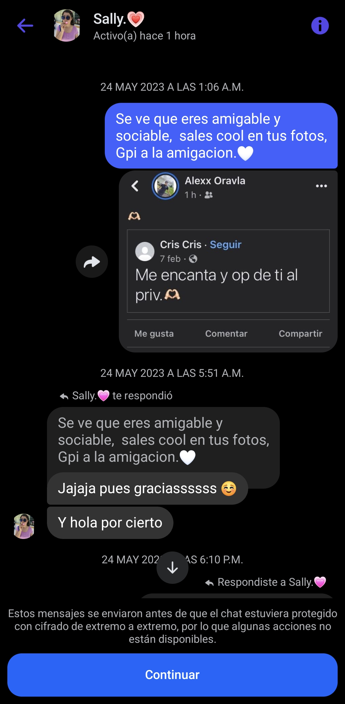
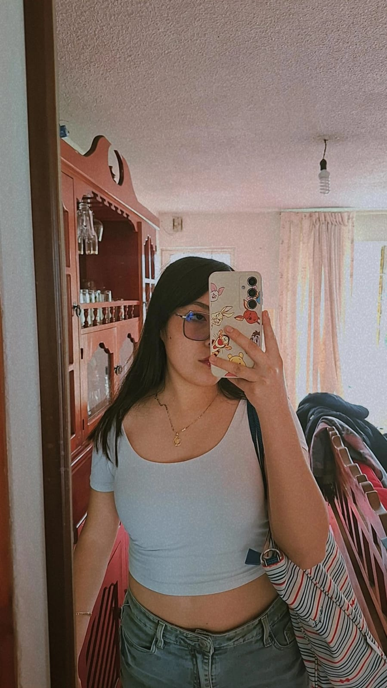

Una historia, nuestros recuerdos y algo que quiero
preguntarte.
NUESTRA HISTORIA
Si volviera a empezar...
Hay algo que quiero que leas hasta el
final.
01
24 DE MAYO DE 2023
Todo comenzó con un mensaje
A veces pienso en lo curioso que es que algo tan pequeño
pueda
terminar significando tanto. Todo comenzó cuando
respondí a un
comentario tuyo en una de mis publicaciones.
Me contestaste, te respondí y después la conversación se
quedó ahí.
En ese momento no sabía todo lo que todavía nos faltaba
vivir, ni
que algún día estaría escribiéndote una carta como esta.

El comienzo de una historia que no imaginábamos.
♥
02
15 DE NOVIEMBRE DE 2023
Volver a intentarlo
Volví a escribirte con esos nervios de no saber si me
responderías.
Y esta vez sí lo hiciste. Empezamos a hablar y, poco a
poco, fuiste
convirtiéndote en alguien cada vez más especial para mí.
Qué bonito que, entre tantas personas y tantas
posibilidades,
nuestras conversaciones encontraran otra oportunidad.
♥
03
5 DE ABRIL DE 2024
El día que te lo pregunté
Llegó el momento en que te pedí que fueras mi novia. Y
desde
entonces nuestra historia dejó de ser solamente una
conversación
para convertirse en algo que vivimos de verdad.
Un recuerdo de los muchos que guardo contigo.
♥
04
LO QUE HEMOS VIVIDO
Nuestra historia no ha sido perfecta
También hubo momentos difíciles. Nos separamos, dejamos
de hablar y
nuestras vidas siguieron por caminos distintos durante
un tiempo. No
quiero fingir que eso no pasó, ni borrar una parte de
nuestra
historia.
Pero volvimos a encontrarnos. Y hoy estamos aquí,
compartiendo
momentos, cariño y esa forma tan nuestra de estar
juntos, aunque
todavía no hayamos vuelto a ponerle oficialmente el
nombre de
novios.
Para mí, eso hace que esta pregunta sea todavía más
especial: no
quiero regresar al pasado como si nada hubiera sucedido.
Quiero ver
qué podemos construir con todo lo que hemos aprendido.
♥
ALGO QUE QUIERO DECIRTE
Lo que siento por ti
Fenana, si pudiera volver al día en que empezamos a
hablar, volvería
a escribirte. Volvería a sentir esos nervios de no saber
si me
responderías y esa felicidad de descubrir que, de alguna
manera,
nuestras vidas estaban empezando a coincidir.
Hay tantas cosas de ti que me enamoran… tus ojitos
rasgaditos, tu
forma de ser, cómo me tratas, cómo te preocupas por mí y
cómo,
cuando te necesito, estás ahí. Me encantan tus besos, tu
compañía y
esa sensación tan bonita que tengo cuando estoy contigo.

Hay cosas que las palabras apenas alcanzan a
explicar.
No quiero hablarte como si fuéramos dos personas que
apenas se están
conociendo, porque tú y yo sabemos lo que hemos vivido.
Tenemos
recuerdos hermosos, momentos complicados y una historia
que ha
cambiado con el tiempo. Pero lo que siento por ti sigue
siendo real.
No quiero volver contigo solamente para decir que otra
vez somos
novios. Quiero que, si los dos decidimos hacerlo, sea
porque
queremos construir algo bonito, cuidarnos, entendernos,
aprender de
lo que pasó y seguir creando recuerdos que algún día
podamos mirar
con una sonrisa.
No te prometo una historia perfecta. Te ofrezco mis
ganas de seguir
intentándolo, de hablar contigo cuando algo nos duela,
de celebrar
contigo lo bonito y de cuidar lo que tenemos.
Porque, si la vida me da la oportunidad de escribir un
nuevo
capítulo contigo, no quiero borrar los anteriores.
Quiero
conservarlos, porque también forman parte de la historia
que nos
trajo hasta aquí.
Con todo mi corazón, para ti.
♥
Y AHORA, MI NIÑA...
Después de todo lo que hemos sido, de lo que todavía somos y
de todo
lo que sueño que podamos llegar a ser...
Fenana, ojitos bonitos…
¿quieres volver a ser mi novia?
No te lo pregunto porque quiera regresar al pasado.
Te lo pregunto porque quiero seguir escribiendo nuestra
historia contigo.
Sea cual sea tu respuesta, quería que supieras lo importante
que eres para mí.